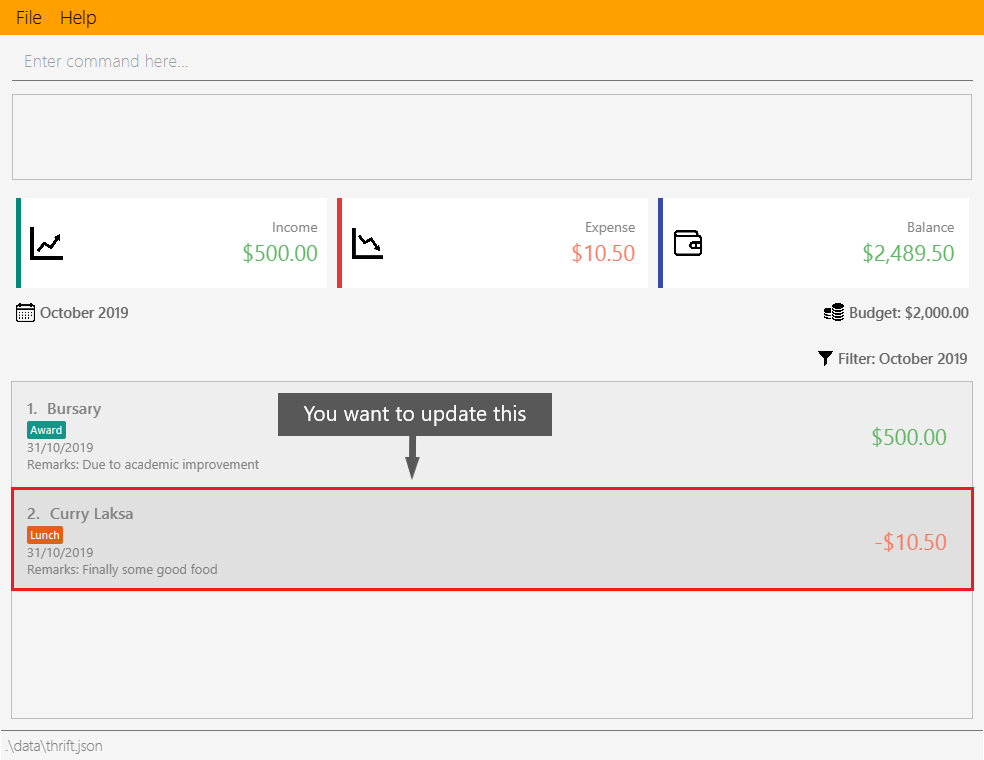

1. Introduction
In 2019, I worked on a team project for CS2103T, a Year Two undergraduate software engineering module at the National University of Singapore (NUS). This portfolio documents my contributions to that project, THRIFT. Through this portfolio, I hope to showcase my abilities in coding and documentation.
1.1. My team
I have worked with four other talented coders to implement features. Each of us was assigned an additional role; I was the Quality Assurance Manager in charge of ensuring our product met user needs and functioned properly through testing. Poh Jia Hao was the Project Manager, Lee Bo Qiang was the User Experience Developer, Melvin Ang was the Software Architect and Kenson Oen was the Process Analyst.
1.2. Project THRIFT
My team morphed the address book application AddressBook-Level3 into THRIFT, a desktop finance tracker application. THRIFT is meant for NUS students who wish to keep track of all their income and expenditure information to better control, manage and plan their flow of money.
To that end, some of THRIFT’s unique features include setting a monthly budget, tagging and untagging entries with categories, listing entries in a given month, creating copies of entries across periods of occurrence and converting currencies.
As part of CS2103T requirements, THRIFT has an intuitive Command Line Interface - everything you want to do is executed by typing a command in the Command Box indicated in Figure 1 below. The following image shows what THRIFT looks like:

1.3 Text formatting in this portfolio
The "Contributions to the User Guide" and "Contributions to the Developer Guide" sections use these formatting styles for text that have special meaning:
| This symbol indicates information that you may want to take note of at certain points in the guide. |
| add_expense n/Laksa v/4 |
Bold text indicates user input. |
2. Summary of contributions
This section provides an overview of my contributions to THRIFT. Entries in THRIFT are referred to as "transactions".
Text with grey highlight (called a mark-up) indicates a class, like Command.
2.1. Major enhancements
-
I added the ability to clone transactions.
-
What it does: The clone command creates one or multiple copies of a specified transaction. The user can set the frequency of multiple copies across a daily, weekly, monthly or yearly period, for example one copy per day for 7 days.
-
Justification: This feature makes it much more convenient to create copies of a transaction. Most users have similar recurring transactions across a period of time and will use this feature often.
-
Highlights: Implementing the logic for cloning one or multiple transactions required in-depth logical analysis.
-
-
I overhauled the function of updating transactions for THRIFT.
-
What it does: The update command allows users to modify details of a transaction.
-
Justification: Updating transaction details or rectifying mistakes in transaction information is a basic core feature.
-
Highlights: I refactored AddressBook-Level3’s edit feature into an update command syntax suitable for THRIFT, disallowing input with multiple instances of the same field type which had been allowed. I also changed the way update saves the updated transaction as the old implementation only works when all transactions are unique.
-
Credits: The update feature is built on AddressBook-Level3’s edit.
-
2.2. Minor enhancements
-
I implemented scrolling to items in the user interface list for some commands.
-
What it does: Upon execution of commands that modify the displayed list or its transaction entries like add_expense and update, the user interface scrolls to the modified item.
-
Justification: The user can immediately see the result of their command instead of needing to manually scroll and find the modified transaction.
-
Highlights: I divided all
Commandclasses into children ofScrollingCommandandNonScrollingCommand. Commands underScrollingCommandmake the user interface scroll to the modified transaction in the list after command execution.
-
2.3. Code contributed
Here are links to the code and solutions contributed by me:
All code contributed |
Pull Requests |
Issues assigned |
Commits
2.4. Other contributions
-
Project management:
-
Documentation:
-
Community:
-
I reviewed these Pull Requests opened by my teammates with non-trivial comments: #212 #206 #101
-
I engaged in discussions with teammates to decide how best to implement features (Pull Request #211)
-
The Scrolling Commands ability I implemented was adopted in some of my teammates' features (Pull Requests #205 #195 #165)
-
3. Contributions to the User Guide
This section showcases part of my contributions to the User Guide, demonstrating my ability to write documentation as a guide for end users making use of the product. A screenshot of the product display follows each instruction step.
The User Guide uses this text style in addition to those in this portfolio’s section 1.3:
update
|
Text with grey highlight (called a mark-up) indicates anything related to the explanation of user input. |
----------{Start of extract from User Guide}----------
Updating a transaction’s details: update
Made a mistake when creating a transaction? Have new details for an existing transaction? Simply utilize THRIFT’s
update feature to make changes.
Command syntax
To execute the update command, you have to use the following syntax:
update i/INDEX [n/NEW_NAME] [v/NEW_VALUE] [r/NEW_REMARK] [t/NEW_TAG] …
Here is an explanation for the update command:
Example usage
You order a bowl of delicious Laksa and key in the details of this food expense into THRIFT. However, after your meal you realize you recorded some incorrect details - the Laksa was Asam Laksa, not Curry Laksa as you thought, and you paid more than the menu price (which you recorded) due to taxes. You also want to add a remark and tag.
Fortunately, you can easily update such details in THRIFT. Here is what you do from beginning to end:
-
You initially have a "Curry Laksa" expense in THRIFT. It is at index 2 in the list.
 -
When you realize the Laksa is not Curry Laksa and want to change the transaction’s name, you type update i/2 n/Laksa into the Command Box and press Enter.

-
You should see that the "Curry Laksa" transaction’s name is updated to "Laksa". The status message also tells you what the original transaction was.

-
Later on, you want to change the name and value, as well as add a remark and tag. In the Command Box, you type:
update i/2 n/Asam Laksa v/12 r/My first time trying! t/Food t/Lunch
and press Enter.
-
You can see the updated details of the transaction at index 2. The status message tells you what the original transaction was. The transaction month’s Expense and Balance trackers are also updated.

----------{End of extract from User Guide}----------
Contributions to the Developer Guide
This section showcases part of my contributions to the Developer Guide, which conveys the technical intricacies of my work on the project. It demonstrates my ability to write technical documentation.
The Developer Guide uses these text styles in addition to those in this portfolio’s section 1.3:
currentMonth
|
Text with grey highlight (called a mark-up) indicates that it is a method/variable/parameter name. |
THRIFT
|
Bold text with mark-up indicates a class/package name. |
----------{Start of extract from Developer Guide}----------
Cloning transactions
The clone feature creates one or more duplicates of a specified Transaction and adds them to the end of the
existing transactions list.
Implementation
An Index and Occurrence are obtained from their representation in user input. The Index specifies
which transaction to clone, while the Occurrence informs THRIFT how many clones of the transaction should be
created (Occurrence#numOccurrences) and the time period between them (Occurrence#frequency).
Here is a Class Diagram for the implementation of Occurrence:
Occurrence classThe clone functionality is facilitated by common Logic operations and classes for commands, with
feature-specific classes CloneCommand in place of Command, and CloneCommandParser.
The following methods are concrete implementations unique to clone:
-
CloneCommandParser#parse()- Parses user input to extract anIndexand create anOccurrence, then passes them as parameters to a newCloneCommandfor execution. -
CloneCommand#execute()- Adds one or more identical copies of specifiedTransactiontoModel, then returns aCommandResult(Step 4 of Logic).
The following sequence diagram illustrates clone command execution:
ExpenseExample of usage
Given next is an example usage scenario for cloning a transaction and explanation of how the clone mechanism behaves at each step:
| This entire scenario uses the list of all transactions. |
Step 1. The user starts up the application with an initial list loaded from external storage file. The diagram here depicts the example list used throughout this scenario. In particular, this example will observe the cloning of the transaction at index 4.
Step 2 (i). The user inputs clone i/4 or clone i/4 o/daily:0 to create 1 copy of the transaction at index 4 on the date when command is called - for this example, current date when command is used is 02/12/2019.
Step 2 (ii). The user removes the clone created in Step 2 (i) using delete i/6 command.
Step 3. The user inputs clone i/4 o/monthly:12 to create 12 copies of the transaction at index 4 with dates one
month apart from each other (30/12/2019 to 30/11/2020), and add them to the list. Input is parsed by
CloneCommandParser#parse() which creates a CloneCommand.
Step 4. CloneCommand#execute() creates copies of the transaction to be cloned with their dates of occurrence set one
month apart. The copies are then added to the list.
Execution observed by user
The following activity diagram gives an overview of what the user observes when executing clone command:
Design considerations
This subsection explores some alternative designs considered for certain aspects of the feature’s implementation.
Aspect: Representing occurrences for execution
-
Alternative 1 (current choice): Implement a new class
Occurrenceto represent occurrences.-
Pros: Good Object-Oriented Programming design adhering to principles of abstraction and encapsulation. Utility methods to process occurrences can be kept in a single class.
-
Cons: More code and memory required for entire
Occurrenceclass.
-
-
Alternative 2: Directly pass the results from parsing occurrence representation in user input as parameters to execution methods.
-
Pros: Quick and efficient in producing parameters for execution.
-
Cons: May be complicated to trace parameters when passing between different methods. Unable to implement utility methods to process occurrences within a single class.
-
----------{End of extract from Developer Guide}----------